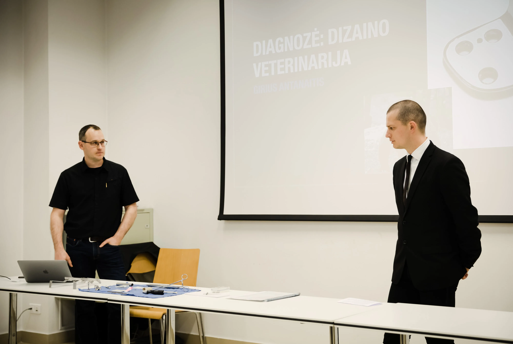
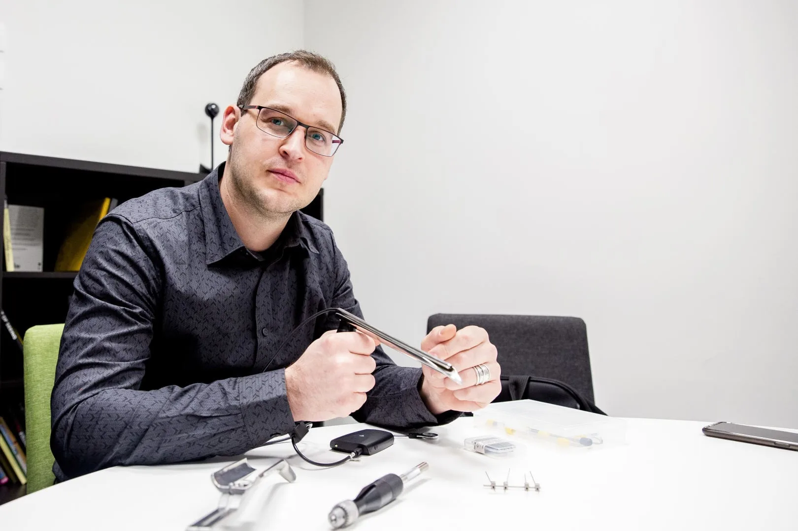

GA Medical Veterinary & me
GA Medical Veterinary is my self-run micro business that develops custom veterinary instruments. I specialise in medical devices for wildlife, marine mammals, fish and avian patients, which is to say animals that most companies will not service because they aren't commercially viable. I donate a lot of my time to that design and development work. The truth is, many of the devices I make never pay themselves off. The time, development, engineering and production costs add up.
I do this because no one else does. I love the challenge, and seeing my devices help animals that would otherwise suffer, be half treated, or worst of all, die.
So I am here to help.
My journey started when I approached a few zoos in Australia and asked whether there were any surgical instruments I could help develop. The answer was yes: there's a heap of things that can be made to help wildlife. What I found is that most wildlife and avian patients are treated with instruments designed for humans. They don't fit, they don't work properly, and at best they do a fraction of what they should. Only a handful of devices are actually made for animals, and those are for the pets and livestock that generate profits: cats, dogs, horses.
There are a lot of design projects on the go for wildlife healthcare. When I finish one, two more tend to pop up. More funding would let me build them all, but most are self-funded, so I do what I can. I try never to say no to a project that I know will help an animal.

Girius Antanaitis
- Founder & Managing Director of GA Medical Pty Ltd
- Industrial Designer
- University Lecturer & Design Workshops
- Passion for helping Wildlife & Avian patients
- Woodworker/Metalworker
- See projects
What I do
Custom-engineered surgical instruments for wildlife and marine species.
Design & development
Design and manufacture custom medical devices, including adaptation and modification of existing equipment.
Surgical instruments
Develop animal-specific instruments, including implants, dental devices, and skeletal fixtures.
Apparatus
Design new apparatus for surgical and dental procedures, transportation, and general healthcare.
Consumables
Create custom consumables for specific animals, including needles, suture kits, and single-use tools.
GA Veterinary in the news

Australian Geographic
Australian Geographic profiles the designer behind wombat dental gags and whale needles, and the one-off tools he builds for wildlife.
Read articleVet Practice Magazine
A profile on how industrial design solves the practical problem of operating on animals with unusual anatomy.
Read article
Orangutan Foundation
A world-first surgical mission featuring a custom pelvic implant to relieve the daily pain of a rescued sun bear.
Read articleLRT
Life-saving surgical instruments for wildlife, including specialized implants for rescued animals (Lithuanian).
Read article
Vilnius Academy of Arts
A lecture on industrial design and wildlife veterinary medicine (Lithuanian).
Read article
15min
An interview (Lithuanian) about the instruments Girius invented so wild animals can be treated humanely.
Read article